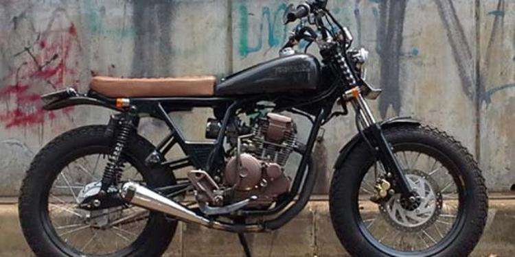

JAPSTYLE
Japstyle motorbikes are motorbikes modified with a classic Japanese style. This modification style usually takes inspiration from classic Japanese motorbikes such as the Honda CB, Yamaha XS, Kawasaki W, and Suzuki GS. Some of the distinctive characteristics of the Japstyle motorbike are the use of a modified frame and body, the use of wider tires, and the use of vintage-style round lights on the front.
